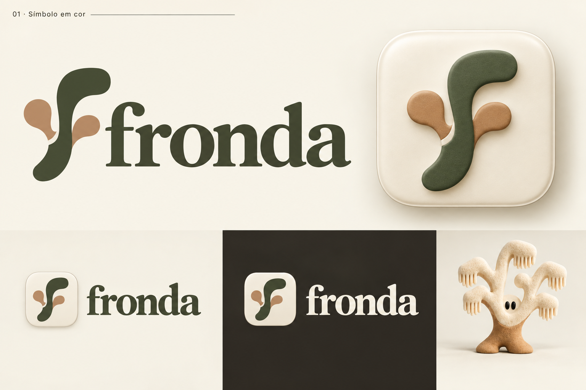
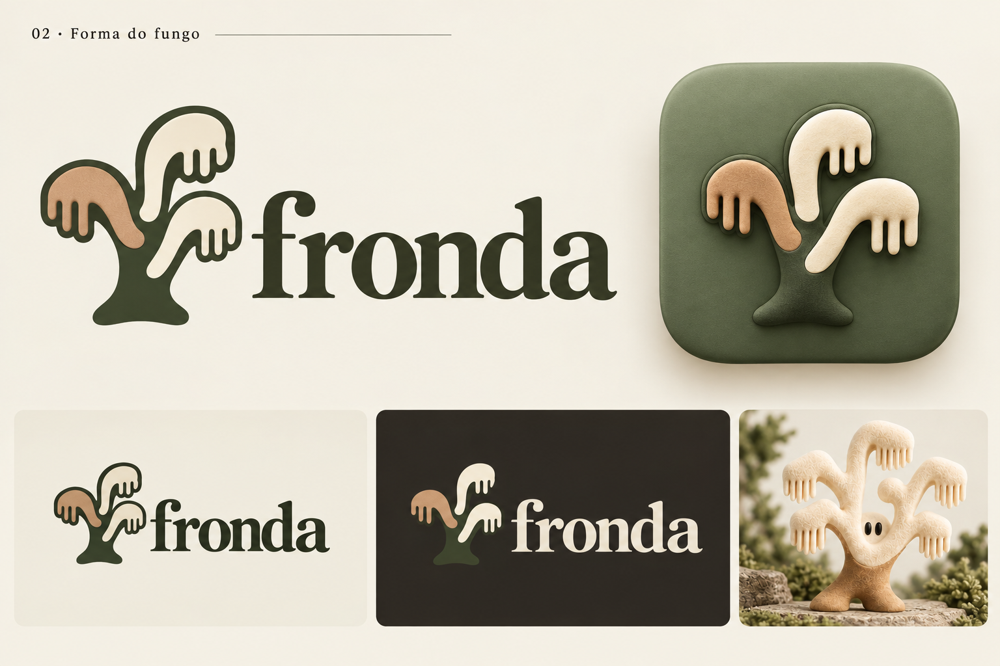
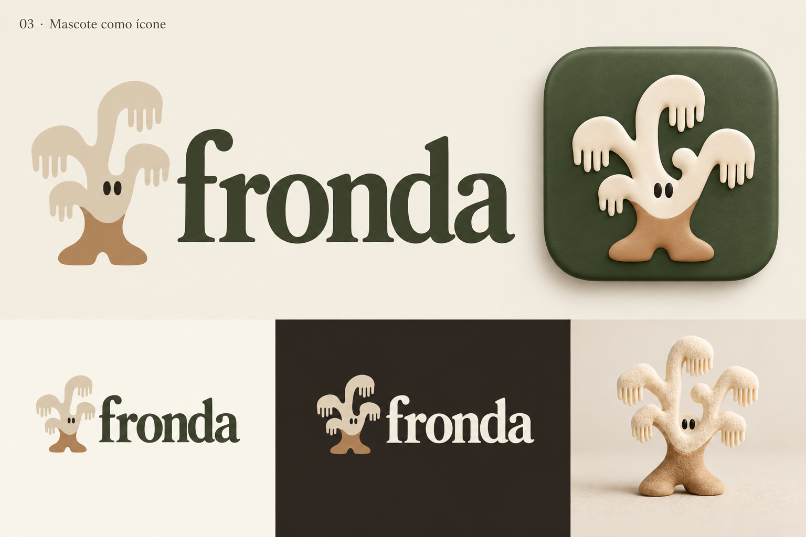

01 · Símbolo em corUma evolução do símbolo original. Musgo e argila dão calor ao f, com uma base marfim para o ícone.Maior continuidade com o f original.
02 · Forma do fungoAs ramificações do Fronda viram a assinatura. Uma ligação direta com o fungo, sem usar o rosto.O tronco precisará de ajuste de contraste no fundo escuro.
03 · Mascote como ícone Minha recomendaçãoO personagem assume o ícone. A conexão mais direta entre nome, mascote e cores.O fundo musgo funciona melhor para o personagem. A versão solta no claro precisa ganhar contraste.